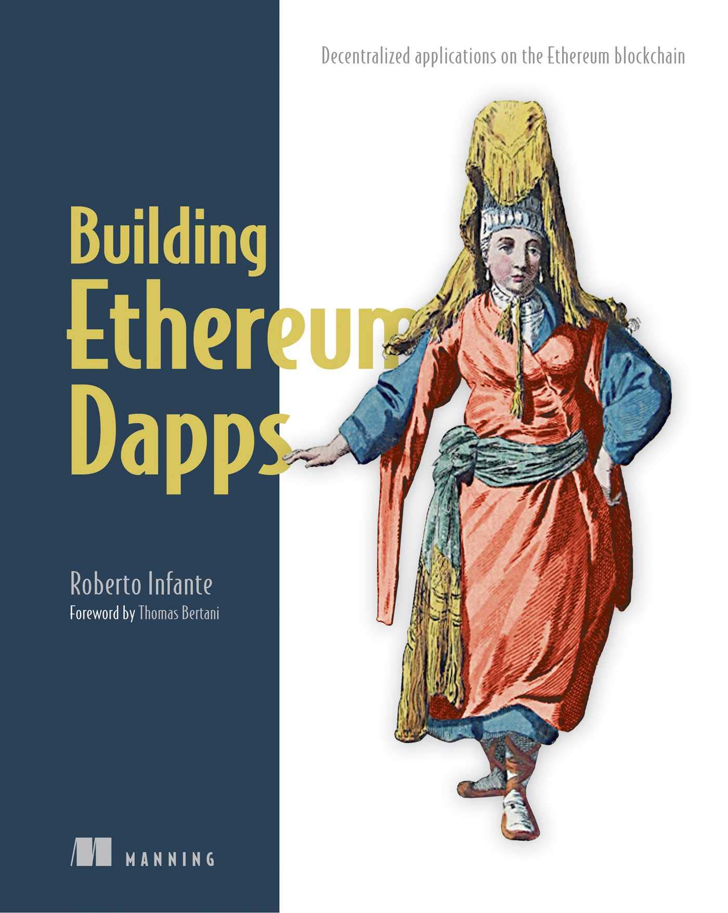

Poglavje 11 P5.1 DApps, pametne pogodbe in Solidity
P5.1
Sodelovalna tabla, ki jo bomo uporabljali pred in med predavanji ter je namenjena odložišču za vprašanja in komentarje. Vsi testni primeri, predstavljeni v okviru predavanja P5.1, so na voljo v GitHub repozitoriju SP-2022-2023/Snippets.
11.1 Decentralizirane aplikacije
11.1.1 Kaj je decentralizirana aplikacija (DApp)?
Najprej si poglejmo koncept, ki ga že poznamo, in sicer centralizirana aplikacija. Ko govorimo o tradicionalnih spletnih in poslovnih aplikacijah, so le-te, z vidika uporabnika, implicitno centralizirane. Centralizirano aplikacijo nadzira osrednji akter (npr. posameznik, podjetje, vladna agencija ipd.), ki sistem gosti neposredno v svojih prostorih ali preko ponudnikov storitev v oblaku in imajo popoln nadzor nad vsemi komponentami in plastmi arhitekture sistema. Uporabnik lahko tej centralni entiteti zaupa in se pri odločanju, ali bo dostopal do storitev nekega sistema, odloča na podlagi ugleda te centralne entitete. Z vidika uporabnika je takšen sistem lahko zaupanja vreden ali ne in tako je tudi zasnovana večina današnjih spletnih aplikacij.
Soglasje (angl. consensus) je porazdeljena (angl. distributed) in nezaupljiva (angl. trustless) oblika dogovora pri preverjanju transakcije. Porazdeljenost v tem kontekstu pomeni, da neodvisen organ ne preverja transakcij, ampak namesto tega vsi udeleženci prispevajo k preverjanju in se pri tem strinjajo. Nezaupljivost pa pomeni, da si sodelujoči udeleženci pri doseganju končnega rezultata preverjanja medsebojno ne zaupajo. Soglasje je doseženo, ko se kvalificirana večina udeležencev strinja z izidom transakcije.
Posledica takšne arhitekture je decentralizirana obdelava na neodvisnih vozliščih, namesto centralizirane na izbranem naboru strežnikov, ki jih nadzoruje določena entiteta. Takšna decentralizacija razbremeni uporabnika, da bi moral zaupati določeni entiteti, saj mora zaupati le zasnovi omrežja. Aplikacije, ki so zgrajene na takšni arhitekturi, imenujemo decentralizirane aplikacije (angl. DApp).
Primer takšne aplikacije je aplikacija za podporo glasovanju, ki jo bomo razvili v okviru predmeta. Slika 11.1 prikazuje ključne razlike med dvema verzijama takšne aplikacije, in sicer med centralizirano in decentralizirano.
Slika 11.1: Primerjava med centralizirano in decentralizirano aplikacijo za glasovanje
Decentralizirane aplikacije temeljijo na dveh ključnih načelih:
- Aplikacijska logika je prisotna in se istočasno neodvisno izvaja na vsakem (enakovrednem) strežniku v P2P omrežju. Vsak strežnik ima lahko drugega lastnika in ne obstaja centralni strežnik, ki bi nadzoroval ostale. Strežniki ves čas medsebojno preverjajo rezultate izračunov, tako da mora uporabnik zgolj zaupati P2P omrežju in ne posamezni entiteti. Aplikacijski podatki so shranjeni v lokalni kopiji podatkovne baze na vsakem strežniku v omrežju.
- Tehnologija podatkovne baze se imenuje veriga blokov (angl. Blockchain), kar je posebna oblika tehnologije razpršene evidence (angl. Distributed Ledger Technology (DLT)), ki zagotavlja, da podatkov za nazaj ne moremo spreminjati.
Podatkovna baza v obliki verige blokov temelji na podatkovni strukturi, kot že samo ime pove - veriga blokov. Blok je zapis, ki vsebuje:
- množico transakcij, kjer je vsaka digitalno podpisana,
- metapodatke (npr. številko bloka in časovni žig) in
- povezavo do prejšnjega bloka.
Vsaka transakcija, blok kot celota in povezave med bloki so zavarovane s kriptografsko tehnologijo, zaradi katere so le-te nespremenljive (angl. immutable) - retrospektivna sprememba posameznih transakcij je praktično nemogoča, še posebej, ko se v verigo doda več novih blokov. To je tudi ena izmed slabosti takšnih sistemov, saj so s tega vidika neprizanesljivi do napak, ki se lahko zgodijo pri transakcijah z napačno vsebino (npr. napačna količina poslanih sredstev, napačen naslovnik posredovanih sredstev, napake v izvorni kodi pametnih pogodb idr.).
11.1.2 Omrežje Ethereum
Obstajajo različna omrežja P2P, ki podpirajo tehnologijo veriženja blokov. Najbolj znano je omrežje Bitcoin, ki je bilo tudi prvo javno dostopno omrežje verige blokov.
V okviru tega predmeta se bomo osredotočili na omrežje Ethereum. Vozlišča, ki sodelujejo v omrežju Ethereum, gostijo podatkovno bazo verige blokov in kos programske opreme - odjemalec vozlišča. Ker so vozlišča med seboj enakovredna, v omrežju Ethereum ni jasnega razlikovanja med konceptom odjemalec in strežnik. Vsako vozlišče je namreč strežnik za druga vozlišča in hkrati tudi odjemalec drugih vozlišč. Ravno zato se programski element vozlišča Ethereum imenuje odjemalec (angl. client).
Odjemalci Ethereum izpostavljajo skupni odjemalski vmesnik in medsebojno komunicirajo preko protokola P2P, ki se imenuje Wire. Obstajajo različne implementacije odjemalca Ethereum (npr. v programskem jeziku C++, Go, Java, Ruby itd.), vendar vsi implementirajo standardni odjemalski vmesnik in protokol Wire, zato lahko komunicirajo brez težav.
Prednost odjemalca Ethereum vozlišča pred odjemalcem Bitcoin vozlišča je v tem, da poleg posredovanja transakcij in blokov kriptovalut, kot to podpira vozlišče Bitcoin, lahko vozlišče Ethereum izvaja tudi kodo aplikacije, ki se nahaja v podatkovni bazi verige blokov. S tega vidika so platforme, kot je Ethereum, znane tudi kot programabilne verige blokov. Izvorna koda decentraliziranih aplikacij se nahaja v pametnih pogodbah (angl. Smart Contract), ki vsebujejo logiko in stanja, podobno kot razredi v objektno usmerjenih programskih jezikih.
Čeprav vozlišča omrežja Ethereum komunicirajo preko skupnega protokola Wire, vsa vozlišča ne opravljajo enake funkcije. V splošnem poznamo dve osrednji vrsti vozlišč, ki se razlikujeta po funkcionalnostih:
- Polna vozlišča (angl. full node), ki lahko pasivno obdelajo transakcije - berejo iz podatkovne baze verige blokov, ne morejo pa kreirati novih blokov. Lahko pa dodajo bloke, ki so jih prejeli od ostalih enakovrednih vozlišč, v svojo lokalno verzijo verige blokov. Izvajajo tudi transakcije, vendar zgolj zato, da preverijo pravilnost podatkov verige blokov, ki jih prejmejo od ostalih enakovrednih vozlišč. Preverjajo tudi ali so prejeti bloki pravilni in vsebujejo verodostojne podatke z izvajanjem pametnih pogodb, vendar v verigo blokov ne zapisujejo podatkov.
- Rudarska vozlišča (angl. mining node) aktivno obdelujejo transakcije - združujejo in shranjujejo transakcije v nove bloke podatkovne baze verige blokov. Za opravljanje računsko intenzivnega in energetsko zahtevnega dela so nagrajeni v Ether-ju, kriptovaluti, podprti na platformi Ethereum. Te nove bloke tudi posredujejo naprej preostalim vozliščem omrežja P2P. Vozlišča so rudarska zato, ker je proces konsolidacije novega bloka v verigi blokov in nagrajevanje dela v žetonih kriptovalute, znano kot rudarjenje.
Opomba: 15. 9. 2022 je Ethereum namesto mehanizma soglasja o delu (angl. Proof-of-Work (PoW)) začel uporabljati mehanizem soglasja o deležu (angl. Proof-of-Stake (PoS)), kar imenujemo združitev (angl. the Merge).
Slika 11.2: Življenjski cikel aplikacije za glasovanje
11.1.3 Terminologija DApp
V tem poglavju bomo predstavili ključne izraze, ki jih je eden od ustanoviteljev omrežja Ethereum, Vitalik Buterin, opisal v dnevniškem zapisu DAOs, DACs, DAs and More: An Incomplete Terminology Guide, kjer je pojasnil ključne koncepte DApp.
Pametna pogodba (angl. smart contract) je dogovor med dvema ali več strankami, ki vključuje izmenjavo digitalnih sredstev. Ena ali več strank ob sklenitvi pogodbe le-tej dodeli digitalna sredstva. Sredstva se nato prerazporedijo med stranke v skladu z vnaprej določenim protokolom, zapisanim v poslovni logiki in stanjem, ki se inicializira ob začetku pogodbe.
Avtonomni agent (angl. autonomous agent) je programska enota, ki samostojno sodeluje z zunanjimi programskimi storitvami in se lahko ponovno konfigurira ali ponastavi po preverjenih spremembah v zunanjem okolju.
Tradicionalna centralizirana organizacija vsebuje sredstva in različne skupine posameznikov, običajno vlagatelje, zaposlene in stranke. Vlagatelji nadzorujejo organizacijo tako, da imajo v lasti njen del z nakupom delnic. Na interakcije med nekaterimi skupinami posameznikov vpliva tudi to, ali nadzorujejo organizacijo. Zaposlene lahko npr. zaposlijo vlagatelji ali drugi zaposleni, ki jih neposredno ali posredno pooblastijo vlagatelji.
Decentralizirane organizacije (angl. decentralized organization (DO)) ne nadzoruje nobena entiteta. Vnaprej določeni protokoli so tisti, ki določajo interakcije med skupinami posameznikov, vključenih v organizacijo. Takšni protokoli so lahko zasnovani tako, da imajo nekateri posamezniki več moči kot drugi, npr. glede na število lastniških delnic (podobno kot pri centraliziranih organizacijah).
Decentralizirana avtonomna organizacija (angl. decentralized autonomous organization (DAO)) je hkrati decentralizirana organizacija (DO) in avtonomni agent. Tako kot avtonomni agent je programska enota, ki samostojno sodeluje z zunanjimi programskimi storitvami. Posamezniki, vključeni v DAO, sodelujejo, tako kot pri DO, preko vnaprej določenih protokolov. Glavna razlika med DAO in DO je v tem, da so interakcije med DAO in zunanjimi akterji v veliki meri avtomatizirane, protokoli interakcije pa so zapisani v pametni pogodbi, medtem ko so interakcije med lastniki DO in zunanjimi strankami predmet ročno opredeljenega protokola. Ključna prednost je, da so z vidika zunanjih akterjev DAO bolj zaupanja vredni kot DO, saj so avtomatizirane interakcije predvidljive, medtem ko so interakcije ročno opredeljenega protokola v celoti odvisne od ugleda posameznikov, ki mu sledijo.
Decentralizirana avtonomna korporacija (angl. decentralized autonomous corporation (DAC)) je DAO, ki je lahko delno v lasti tudi z nakupom delnic. Kot pri klasičnih centraliziranih korporacijah tudi DAC občasno izplačuje dividende, odvisno od finančnega uspeha. Po drugi strani je DAO v splošnem neprofitna organizacija, kjer imajo udeleženci ekonomsko korist izključno s prispevkom k ekosistemu in povečanjem notranjega kapitala.
11.1.4 Decentralizirane in porazdeljene aplikacije
Decentraliziranih (angl. decentralized) aplikacij ne smemo zamenjevati s porazdeljenimi (angl. distributed) aplikacijami. Oba pojma si delita nekaj skupnih lastnosti, vendar predstavljata dva različna koncepta.
Aplikacija je porazdeljena, če deluje na več strežnikih v omrežju. Najenostavnejši primer porazdeljene aplikacije je spletna aplikacija, ki je običajno razdeljena na spletni strežnik, aplikacijski strežnik, podatkovno bazo ter mogoče še poštni strežnik in kakšen starejši mainframe sistem, kot to prikazuje levi del slike 11.3. Demo aplikacija, ki smo jo razvili do tega trenutka pri predmetu, je primer porazdeljene aplikacije.
Slika 11.3: Primerjava strukture porazdeljene in decentralizirane aplikacije
Porazdeljena aplikacija se izvaja na več strežnikih v omrežju. Aplikacija je decentralizirana, če je v celoti replicirana na vsako vozlišče omrežja, kjer je vsako vozlišče lahko v lasti druge entitete. Večje kot je število entitet, ki imajo v lasti vozlišča omrežja, bolj zaupanja vredno je celotno omrežje. Očitno je, da omrežij, ki imajo le nekaj lastnikov, ne moremo šteti za zaupanja vredna, ker v resnici ne decentralizirajo obdelave.
Centralizirana aplikacija je ponavadi porazdeljena, vendar se lahko decentralizirane aplikacije tudi porazdelijo po več strežnikih znotraj vsakega logičnega vozlišča.
11.1.5 Primeri dobrih praks
V zadnjem obdobju je bilo razvitih veliko decentraliziranih aplikacij DApps. Nekatere so prejele različne kroge financiranja tveganega kapitala in so bile uspešno vpeljane v produkcijo, spet druge niso uspele prepričati vlagateljev in uporabnikov ter niso nikoli prestale faze PoC.
Glede na novost tehnologije je težko napovedati, kaj bo delovalo in kaj ne. Kljub temu poznamo različne primere uporabe, kjer so najbolj uspešni tisti, ki izkoriščajo glavne prednosti teh tehnologij, zlasti nespremenljivost, decentralizacijo, varnost in odpornost.
Posledično so ključna področja, kjer se lahko pristop DApps izkaže kot uspešen, naslednja:
- sledenje poreklu in pristnosti (npr. proizvodnja hrane, zdravil, Everledger),
- preverjanje identitete (npr. KYC-Chain),
- dokaz lastništva (npr. TrustToken),
- ekonomija stvari (npr. Blochains),
- decentralizirani trgi za napovedovanje (npr. PredictIt),
- financiranje mednarodne trgovine (npr. we.trade),
- množično financiranje (npr. WeiFund),
- igre na srečo (npr. Edgeless).
11.2 Veriga blokov
11.2.1 Sklad tehnologij za podporo DApp
Decentralizirane aplikacije temeljijo na poslovni logiki, ki je zajeta v obliki pametne pogodbe in se izvaja v porazdeljeni podatkovni bazi verigi blokov. Tehnologija veriženja blokov pa temelji na kriptografiji z javnim ključem, kriptografskih zgoščevalnih funkcijah in konceptu soglasja, ki ga lahko med drugim implementiramo npr. z dokazilom o delu (angl. Proof-of-Work (PoW)) ali dokazilom o vložku (angl. Proof-of-Stake (PoS)).
11.2.1.1 Kriptografija z javnim ključem
Kriptografija z javnim ključem (angl. public key cryptography) je metodologija šifriranja, ki temelji na paru ključev: zasebni ključ (ponavadi ustvarjen naključno in je znan samo lastniku) in javni ključ (znan vsem in je ustvarjen s pomočjo algoritma, ki na vhodu uporabi privatni ključ). Za boljšo predstavo si lahko zasebni ključ predstavljamo kot fizični ključ poštnega predala, ki ga poznamo zgolj mi, in javni ključ je poštni naslov, ki ga poznajo vsi.
Zasebni ključ ima dva namena, in sicer omogoča:
- dešifriranje podatkov, ki so bili šifrirani z javnim ključem,
- digitalno podpisovanje dokumentov, kjer lahko podpis izvede le tisti, ki pozna zasebni ključ, preveri pa ga lahko vsak z javnim ključem.
Ravno pristnost transakcij pametnih pogodb je odvisna od digitalnih podpisov.
V okviru platforme verige blokov je kriptovaluta shranjena na računu, ki je identificiran z javnim ključem, vendar lahko z računom upravljamo le, če poznamo zasebni ključ. Če zasebni ključ izgubimo ali pozabimo, ne more nihče več upravljati z računom in sredstva na tem računu obravnavamo kot izgubljena.
Demo: Preveri delovanje para javnih in zasebnih ključev, podpisovanje vsebine in podpisovanje transakcije.
11.2.1.2 Kriptografska zgoščevalna funkcija
Zgoščevalna funkcija (angl. hash function) je funkcija, ki lahko preslika podatke poljubne velikosti v podatke fiksne velikosti, kar imenujemo zgoščena vrednost (angl. hash).
Kot primer lahko imamo zgoščevalno funkcijo, ki vedno generira 64-bitno zgoščeno vrednost iz datoteke ali niza poljubne velikosti. Ne glede na velikost, 10 KB ali 10 GB, bo rezultat 64-bitna zgoščena vrednost.
Kriptografska zgoščevalna funkcija (angl. cryptographic hash function) je zgoščevalna funkcija z naslednjimi dodatnimi lastnostmi:
- Je deterministična, kjer isti vhod vrne vedno isto zgoščeno vrednost.
- Hitro izračunljiva.
- Gre za enosmerno funkcijo, ki je ne moremo obrniti. To pomeni, da je edini način za določitev vhodnega podatka na podlagi zgoščene vrednosti takšen, da s surovo silo poskušamo pridobiti isto zgoščeno vrednost z ogromnim številom različnih vhodnih podatkov.
- Skoraj nemogoče je pridobiti isto zgoščeno vrednost iz dveh različnih vhodnih podatkov. Čeprav lahko obstaja manjša možnost, da dva vhoda povzročita isto zgoščeno vrednost, je to nemogoče vnaprej določiti, brez pristopa omenjenega v prejšnji alineji.
- Manjša sprememba vhodnega podatka povzroči večjo spremembo zgoščene vrednosti.
Kriptografske zgoščevalne funkcije se zato uporabljajo za digitalno podpisovanje, lahko pa so uporabne tudi v ostalih scenarijih. Kot primer bi lahko pri spletni trgovini izboljšali varnost za prodajalce tako, da od kupca zahtevamo generiranje tajne kode (npr. naključno število) in potem prodajalcu posredujemo kriptografsko zgoščeno vrednost te kode. Ta zgoščena vrednost je neke vrste zagotovilo plačila. Ko pride dostava, bi npr. kurir izročil blago šele takrat, ko bi prejel to tajno kodo, ki bi ob dobavi v DApp za spletno trgovino ustvarila pričakovano začetno zgoščeno vrednost in bi se uporabila kot fizični ključ za odklepanje plačila. V nadaljevanju si bomo ogledali, kako lahko to idejo uporabimo za izboljšavo varnosti decentraliziranih aplikacij.
Demo: Preveri delovanje zgoščevalne funkcije SHA256.
11.2.1.3 Veriga blokov
Veriga blokov (angl. Blockchain) je porazdeljena podatkovna baza, ki hrani podatke v obliki blokov. Blok vsebuje množico transakcij, ki so digitalno podpisane, da lahko dokažemo njihov izvor. Večina verig blokov transakcije podpisuje z algoritmom digitalnega podpisa z uporabo eliptičnih krivulj (angl. Elliptic Curve Digital Signature Algorithm (ECDSA)), saj ga je težje zlomiti kot algoritem digitalnega podpisa (angl. Digital Signature Algorithm (DSA)) in uporablja manjše ključe pri isti stopnji varnosti.
Vsak blok vsebuje časovni žig in povezavo do prejšnjega bloka (glej sliko 11.4), ki temelji na njegovi kriptografski zgoščeni vrednosti. Vsebuje tudi kriptografsko zgoščeno vrednost povzetka celotnega bloka, vključno z zgoščeno vrednostjo prejšnjega bloka. Na ta način veriga blokov vsebuje trenutno stanje (najnovejši blok) in tudi celotno zgodovino vseh transakcij od začetka.
Slika 11.4: Bloki v verigi blokov
Takšna struktura zagotavlja, da transakcij ni mogoče spreminjati. Transakcije zapisane v bloku ni mogoče retroaktivno spreminjati, ker bi bilo za takšno operacijo treba spremeniti oz. ponovno generirati tudi zgoščeno vrednost bloka, ki ga vsebuje, sicer se podatki ne bi ujemali z obstoječim, na katerega se že sklicujejo naslednji bloki.
Opomba: Če imamo dve kontradiktorni transakciji, npr. vsaka poskuša prenesti vsa sredstva istega računa na drug ciljni račun (napad z dvojno porabo (angl. Double-spending), bodo rudarji izvedli samo prvo, ki je priznana v omrežju Ethereum preko globalno dostopne zaporedne številke. Druga transakcija bo zavrnjena in se ne bo nikoli pojavila v konsolidiranem bloku. Satoshi Nakamoto je bil prvi, ki je rešil problem dvojne porabe na verigi blokov Bitcoin in vsaka veriga blokov ima rešitev za to, sicer ne bi bila uporabna.
Opisana struktura verige blokov je poenostavljena različica podatkovnih struktur verige blokov v resničnem svetu, kot je npr. Merkle tree, ki je v uporabi pri Bitcoinu in Patricia tree, ki se uporablja pri Ethereum. Glede na te lastnosti so verige blokov še posebej primerne za trajno beleženje zgodovine dogodkov (npr. upravljanje identitete, obdelava transakcij, sledenje izvoru idr.).
Demo: Preveri vlogo zgoščevalne funkcije pri posameznem bloku in pri povezovanju blokov v verigo.
11.2.1.4 Rudarjenje
Za vzpodbujanje uporabe omrežja P2P, ki podpira verigo blokov, in neprekinjeno obdelavo transakcij, so aktivna procesna vozlišča oz. rudarji nagrajeni za zagotavljanje računskih virov in kritje stroškov električne energije preko mehanizma soglasja.
Vsakih nekaj sekund ima en uspešen rudar pravico ustvariti in obdržati določeno število žetonov kriptovalute, podprtih s strani platforme. Takšna kriptovaluta ima ekonomsko vrednost, saj jo lahko uporabimo za nakupovanje storitev v omrežju, lahko pa jo tudi zamenjamo za konvencionalne fiat valute (npr. evri, dolarji ipd.).
11.2.1.5 Soglasje
Soglasje (angl. consensus) je mehanizem, kjer se vozlišča v omrežju dogovorijo o izidu transakcije, kar smo že opredelili v poglavju 11.1.1. Omenili smo, da je soglasje porazdeljeno, ker ga oblikujejo številni udeleženci, in nezaupljivo, ker medsebojno zaupanje med udeleženci ni potrebno.
Dejansko soglasje se ne išče na ravni posamezne transakcije, ampak na ravni novega bloka verige. Vsak udeleženec neodvisno preveri ali je nov blok veljaven. Če je z rezultatom zadovoljen, ga posreduje naprej ostalim udeležencem omrežja.
V praksi se ponavadi zgodi, da večina udeležencev prejme blok kot veljaven in ga uspešno posredujejo po omrežju in pri tem rudarji takšen blok uporabijo kot zadnji veljavni blok, kjer bo preostali del verige blokov zgrajen na njem. Če bi zlonamerni rudar dodal napačen blok v verigo in bi se ta razširil na ostala vozlišča, bi ta vozlišča nov blok zavrnila in zlonamerna veriga bi takoj izumrla. Enako bi se zgodilo, če bi polno vozlišče poskušalo spremeniti blok, preden bi ga razširilo med ostala vozlišča.
Ključni korak mehanizma konsenza je preverjanje zadnjega bloka s strani udeleženega vozlišča. Po preverjanju digitalnega podpisa posameznih transakcij v bloku, vozlišče preveri ali je zgoščena vrednost bloka veljavna. Takšno zgoščeno vrednost rudarji ustvarijo po dogovorjenem protokolu. V preteklosti se je na verigi blokov Ethereum uporabljal protokol Proof-of-Work (PoW), trenutna različica pa temeljili na protokolu Proof-of-Stake (PoS).
Slika 11.5: Primerjava PoW in PoS
Kot smo si že pogledali, blok vsebuje kriptografsko zgoščeno vrednost, ki povzema celotno vsebino bloka, vključno z njegovimi metapodatki in podatki o transakcijah ter dodaten del fiksne dolžine 32 bitov, ki se imenuje enkratno kriptografsko število (angl. nonce).
Cilj pri protokolu PoW je, da rudarji najdejo to enkratno kriptografsko število tako, da zgoščena vrednost ustreza določeni omejitvi (npr. vsebuje določeno število vodilnih ničel).
Demo: Preveri vlogo soglasja pri porazdeljeni verigi blokov, vključevanje transakcij v blok in podpisovanje transakcij.
11.2.2 Podrobnosti vozlišča Ethereum
Kot prikazuje slika 11.6, je vsako vozlišče omrežja Ethereum sestavljeno iz dveh osrednjih komponent:
- Odjemalec Ethereum, ki deluje kot izvajalno okolje in je sestavljen iz:
- Navideznega stroja Ethereum Virtual Machine (EVM), ki je sposoben izvajanja izvorne kode pametne pogodbe, običajno napisane v programskem jeziku Solidity in nato prevedene v bajtno kodo EVM.
- Pomnilniški bazen, kjer vozlišče shranjuje prejete transakcije, preden jih posreduje naprej v omrežje.
- Odjemalski proces, ki koordinira obdelavo in obdeluje vhodna sporočila ter transakcije, jih posreduje v EVM, ko je to potrebno, in shranjuje transakcije v pomnilniški bazen ter jih iz njega pridobiva. Odjemalski proces obravnava tudi vhodne bloke iz verige blokov, ki jih vozlišče prejme od ostalih enakovrednih vozlišč in jih dodaja lokalni kopiji podatkovne baze verige blokov.
- JSON-RPC API, ki izpostavlja funkcionalnost odjemalca drugim vozliščem in zunanjim uporabnikom.
- Podatkovna baza verige blokov poleg podatkov o transakcijah hrani še kopijo bajtne kode EVM vseh pametnih pogodb, ki so nameščene v omrežju, in tudi njihovo stanje.
- Rudarska vozlišča na verigi blokov Ethereum, ki uporablja PoW so redno dodajala nove bloke v verigo blokov, in sicer približno vsakih 15 s.
- Odkar Ethereum uporablja PoS, se dodajanja blokov zgodi približno vsakih 12 s.
- Časovna porazdelitev časov generiranja blokov na omrežju Ethereum lahko najdete na yCharts.
Slika 11.6: Podrobnosti vozlišča Ethereum
11.2.3 Življenjski cikel transakcije
Transakcija na verigi blokov se ustvari, ko se v okviru izbranega vozlišča Ethereum preko vmesnika JSON-RPC na pametni pogodbi pokliče funkcija, in sicer so podrobni koraki naslednji (glej sliko 11.6):
- Polno vozlišče prejme transakcijo od enakovrednega vozlišča in jo shrani v pomnilniški bazen.
- Zaradi preverjanja polno vozlišče izvede transakcijo znotraj svojega EVM.
- Če je preverjanje uspešno, vozlišče posreduje transakcijo preostalim enakovrednim vozliščem. V nasprotnem primeru vozlišče transakcije ne posreduje naprej in transakcija je zavržena.
- Rudarsko vozlišče prejeto transakcijo shrani v pomnilniški bazen.
- Rudarsko vozlišče iz pomnilniškega bazena izbere tiste transakcije, za katere meni, da so donosne (tj. tiste z določenim višjim dovoljenim stroškom transakcije) in jih poskuša dodati v nov blok.
- Če je blok uspešno dodan v verigo blokov, rudarsko vozlišče odstrani povezane transakcije iz svojega pomnilniškega bazena.
- Vozlišče posreduje nov blok enakovrednim vozliščem.
- Polno vozlišče prejme nov blok od enakovrednega vozlišča.
- Zaradi preverjanja polno vozlišče izvede vse transakcije bloka v okviru svojega okolja EVM.
- Če je bilo preverjanje uspešno, vozlišče odstrani vse povezane transakcije iz pomnilniškega bazena.
- Vozlišče posreduje blok ostalim enakovrednim vozliščem.
11.2.4 Razvijalski pogled na postavitev pametne pogodbe
Do tega trenutka smo si pogledali, kako je sestavljena decentralizirana aplikacija in kakšen je življenjski cikel transakcije. Zdaj pa si bomo pogledali, kako se pametna pogodba posreduje v omrežje. Izkaže se, da je ta postopek podoben kot pri standardni transakciji.
Pametna pogodba na verigi blokov Ethereum je ponavadi napisana v jeziku Solidity. Razvijalec pametno pogodbo prevede v bajtno kodo EVM in jo nato posreduje na omrežje P2P s pomočjo transakcije postavitve pametne pogodbe. Le-ta se izvede na lokalnem vozlišču Ethereum in se nato posreduje naprej v omrežje. Med širjenjem po omrežju rudarsko vozlišče obdela transakcijo postavitve pametne pogodbe in shrani bajtno kodo EVM v verigo blokov, kot to prikazuje slika 11.7.
Slika 11.7: Razvijalski pogled na postavitev pametne pogodbe. Razvijalec razvije pametno pogodbo v jeziku Solidity in jo prevede v bajtno kodo EVM ter vključi v transakcijo postavitve. To se najprej posreduje na lokalno polno vozlišče Ethereum in se posreduje ostalim enakovrednim vozliščem na omrežju. Po rudarjenju je transakcija vključena v verigo blokov.
DApp, ki uporablja omrežje Ethereum, lahko razvijemo z jeziki, podobnimi tistim, ki se uporabljajo za razvoj centraliziranih spletnih aplikacij in smo jih pri predmetu že spoznali (npr. HTML + JavaScript), kot je prikazano na sliki 11.8. Komunikacijska plast med uporabniškim vmesnikom in strežniško stranjo temelji na knjižnici Web3, ki se izvaja na strani odjemalca. Pametne pogodbe pa lahko razvijemo v programskem jeziku Solidity, ki je določena različica jezika JavaScript.
Slika 11.8: Spletne tehnologije za razvoj decentraliziranih aplikacij.
11.3 Platforma Ethereum
11.3.1 Pametne pogodbe kot osnova DApp
Kot je že predstavljeno v poglavju 11.1.3, je pametna pogodba (angl. Smart Contract) oz. pogodba del programske opreme, ki vsebuje poslovna pravila in stanja. Napisana je v visokonivojskem programskem jeziku, kot je npr. Solidity, prevedena v bajtno kodo EVM, postavljena v omrežje Ethereum in shranjena na verigi blokov v imenu računa, generiranega ob postavitvi na verigo blokov.
Pogodba sprejema transakcijska sporočila iz uporabniškega računa (ali iz drugih pogodb) in izvaja logiko na navideznem stroju Ethereum (EVM). To lahko vključuje tudi pošiljanje sporočil drugim pogodbam, branje stanja iz verige blokov ali zapisovanje stanja v verigo blokov.
Računu, ki pošlje sporočilo pogodbi, se zaračuna transakcijski strošek (v Etherju) s strani uspešnega rudarskega vozlišča, kot kompenzacija za računske in omrežne vire, porabljene med obdelavo zahtevane operacije. Višina takšne kompenzacije se izračuna v enoti gas, zato običajno pravimo, da je transakcija porabila določeno količino enote gas.
Če želimo podrobno razumeti pametne pogodbe, kako jih uporabniki ali druge pametne pogodbe prožijo, in še posebej, kako se izvajajo, si bomo v nadaljevanju podrobneje pogledali naslednje koncepte: računi, Ether in gas, transakcijska sporočila in navidezni stroj Ethereum.
11.3.1.1 Računi
Računi so na voljo v dveh oblikah:
- Računi v zunanji lasti (angl. externally owned accounts (EOA)) ali zunanji računi (angl. external accounts), ki jih pogosto imenujemo kar uporabniški računi (angl. user accounts). Javno so dosegljivi preko javnega ključa, vendar lahko z njimi upravljamo le s poznavanjem zasebnega ključa. Če kupite določeno količino Etherja, ga lahko v takšen račun shranite. Prav tako lahko s takšnim računom zahtevate transakcijo v okviru pametne pogodbe.
- Pogodbeni računi (angl. contract accounts) so računi, s katerimi se izvajajo pogodbe. Naslov računa se ustvari v času postavitve na verigo blokov in identificira lokacijo pogodbe v verigi blokov.
Tabela 11.1 prikazuje ključne lastnostih obeh vrst računov.
| Lastnost | Uporabniški račun | Pogodbeni račun |
|---|---|---|
| Ima stanje v Ether. | ||
| Lahko zahteva sporočilo transakcije. | ||
| Lahko zahteva sporočilo klica. | ||
| Vsebuje kodo. |
11.3.1.2 Ether
Ether je kriptovaluta, ki jo podpira veriga blokov Ethereum. Njena ključna lastnost je predstavljanje denarne vrednosti storitev in blaga, s katerimi se trguje preko platforme.
Ether se uporablja tudi za plačilo transakcijskih stroškov, ki so izračunani v enoti gas, s katero merimo računske vire, ki jih transakcija porabi. Transakcijski stroški so poravnani v Ethru, kar se izračuna iz cene enote gas. Stroške transakcije zaračunajo rudarji, ki jo opravijo, ko v verigo blokov dodajajo nove bloke transakcij.
Ether lahko izrazimo v različnih enotah, kot je prikazano v tabeli 11.2, kjer je najmanjša enota Wei.
| Enota | Vrednost v Wei | Wei |
|---|---|---|
| Wei | 1 Wei | 1 |
| Kwei (Babbage) | \(10^3\) Wei | 1.000 |
| Mwei (Lovelace) | \(10^6\) Wei | 1.000.000 |
| Gwei (Shannon) | \(10^9\) Wei | 1.000.000.000 |
| Microether (Szabo) | \(10^{12}\) Wei | 1.000.000.000.000 |
| Milliether (Finney) | \(10^{15}\) Wei | 1.000.000.000.000.000 |
| Ether | \(10^{18}\) Wei | 1.000.000.000.000.000.000 |
Slika 11.9 povzema življenjski cikel Ethra, kjer so ključni naslednji koraki:
- Kovanje (angl. minting) Ethra, kar se zgodi s postopkom rudarjenja, kjer rudarji tekmujejo za združevanje in dodajanje transakcij v nove bloke verige blokov. Če je rudar uspešen, je nagrajen z določenim številom kovancev Ether. Ko se bloki dodajajo v verigo blokov, se temu primerno poveča tudi ponudba denarja.
- Prenos Ethra, kjer ga lahko prenesemo iz računa rudarja na druge uporabniške ali pogodbene račune.
- Shranjevanje Ethra na računih, ki jih lahko uporabljamo z različnimi metodami, kjer izbiramo med kompromisom udobja (npr. spletna, mobilna ali namizna denarnica) in varnosti (npr. strojna in papirna denarnica).
- Zamenjava Ethra, ki poteka preko menjalnic kriptovalut, ki so lahko centralizirane (npr. Binance, Kraken ipd.) ali decentralizirane (npr. Uniswap).
Slika 11.9: Življenjski cikel Ethra.
11.3.1.3 Gas
Gas je merska enota za stroške transakcij, ki se zaračunavajo na platformi Ethereum. Količina gas, ki je potrebna za izvedbo transakcije, je odvisna od količine računskih virov, ki jih EVM porabi med izvajanjem transakcije. Bolj specifično, to je odvisno od podrobnih ukazov EVM na najnižji ravni, ki so bili izvedeni med transakcijo. V tabeli 11.3 je prikazanih nekaj najbolj pogostih operacij EVM in pripadajoči strošek v enoti gas.
| Operacija | EVM koda | Strošek gas |
|---|---|---|
| seštevanje, odštevanje | ADD, SUB | 3 |
| množenje, deljenje | MUL, DIV | 5 |
| primerjava | LT, GT, SLT, SGT | 3 |
| nalaganje podatka iz spomina | MLOAD | 3 |
| shranjevanje podatka v spomin | MSTORE | 3 |
| nalaganje podatka iz shrambe | SLOAD | 200 |
| shranjevanje podatka v shrambo | SSTORE | > 5.000 |
| kreiranje pogodbe | CREATE | 32.000 |
Glavni razlog za zaračunavanje stroškov transakcije je preprečevanje napadov za zavrnitev storitve (angl. Denial of Service (DoS)) s strani uporabnikov, ki bi želeli motiti delovanje omrežja.
Pri izvajanju transakcije, EVM za delovanje porablja gas, kjer sta možna dva izida:
- Transakcija se uspešno zaključi, kjer se neporabljen gas vrne pošiljatelju.
- Količine razpoložljivih sredstev za plačilo gas zmanjka pred zaključkom transakcije. V tem primeru EVM vrne izjemo in transakcijo razveljavi.
V obeh primerih stroške transakcije prejme rudar. V prvem primeru prejme provizijo tako, da vključi transakcijo v nov blok, ki je uspešno dodan v verigo blokov. Tudi v drugem primeru se provizija zaračuna, kljub neuspešni transakciji.
11.3.1.4 Klici in transakcije
Računi medsebojno komunicirajo preko dveh vrst sporočil: klicev in transakcij.
Klic se pošlje preko sporočila, ki ni shranjeno v verigi blokov in katerega izvedba ima naslednje lastnosti:
- izvaja lahko samo operacije branja, ki ne spreminjajo stanja verige blokov,
- je brezplačen, saj ne porabi stroškov gas,
- obdela se sinhrono,
- takoj vrne vrednost,
- ne dovoljuje prenosa Ethra na pogodbeni račun.
Transakcija se pošlje preko sporočila, ki se med postopkom rudarjenja serializira in shrani v verigo blokov ter vsebuje naslednje podatke:
- naslov pošiljatelja,
- naslov prejemnika,
- (opcijska) vrednost, ki predstavlja količino Ethra za prenos (v enoti Wei), če se sporočilo uporablja za prenos Ethra,
- (opcijski) podatki, ki predstavljajo vhodne parametre, če se sporočilo uporablja za klic funkcije,
- največja vrednost gas, ki se uporabi za izvedbo sporočila - če je omejitev presežena, EVM vrne izjemo in sporočilo razveljavi,
- digitalni podpis, ki dokazuje identiteto pošiljatelja transakcije,
- cena gas je cena enote gas (izražena v Ethru), ki jo je pobudnik transakcije pripravljen plačati.
Izvedba transakcije ima naslednje lastnosti:
- izvaja lahko operacije pisanja, ki spremenijo stanje verige blokov,
- porabijo se stroški gas, ki se plačajo v Ethru,
- obdela se asinhrono, saj se izvede z rudarjenjem in se nato doda novemu bloku verige blokov, ki se posreduje po celotnem omrežju,
- takoj vrne ID transakcije, ne pa rezultata,
- omogoča prenos Ethra na pogodbeni račun, ki postane del transakcije.
11.4 Programiranje pametnih pogodb s Solidity
Do tega trenutka smo omenili jezik Solidity kot visokonivojski jezik EVM, ki omogoča razvoj pametnih pogodb. Pametna pogodba oz. preprosto pogodba je enakovredna razredu v drugih objektno usmerjenih jezikih in vsebuje spremenljivke stanja, konstruktor, funkcije in dogodke.
Preden si pogledamo podrobnosti jezika Solidity, je treba omeniti, da to ni edini visokonivojski jezik EVM za razvoj pogodb. Je zagotovo najbolj priljubljena izbira med razvijalci ekosistema Ethereum, ker je pogosto nadgrajen, dobro vzdrževan in tudi priporočen v uradni dokumentaciji Ethereum. Poleg Solidity pa obstajata še npr. LLL (ni več v aktivnem razvoju) in Viper (omogoča manj funkcionalnosti kot Solidity, vendar lažjo revizijo programske kode).
Življenjski cikel pametne pogodbe lahko zajamemo z naslednjimi koraki:
- Pametna pogodba ima opredeljen cilj, ki ga dosežemo s klicem funkcij s strani vsaj ene entitete oz. njegove denarnice.
- Lastnik denarnice postavi primerek pametne pogodbe na podlagi konstruktorja.
- Klic funkcije iz vsaj ene denarnice z namenom dosega cilja.
- Dosežen cilj se odraža v doseženem soglasju, npr. v obliki zapisanega podatka v pametni pogodbi in/ali izvedbi transakcije prenosa sredstev neposredno preko pametne pogodbe.
11.4.1 Struktura pogodbe
Poglejmo si enostaven primer pogodbe AuthorizedToken, ki je prikazan v nadaljevanju in vsebuje vse možne opredelitve, ki se lahko pojavijo v pogodbi.
Spremenljivka stanja (angl. State variable) hrani stanje pogodbe. Opredelimo jih lahko s poljubnim tipom, ki ga jezik Solidity podpira. Nekateri tipi (npr. preslikave tokenBalance, registeredAccount in frozenAccount) so dovoljeni zgolj za spremenljivko stanja.
Dogodek (angl. Event) je del pogodbe (npr. Transfer in FrozenAccount), ki je v interakciji z dnevnikom transakcij EVM in njegov klic sproži posredovanje vsem odjemalcem, ki so naročeni na posamezen dogodek.
Zaloga vrednosti (angl. Enum) opredeljuje lasten podatkovni tip po meri z vnaprej določenim naborom dovoljenih vrednosti.
Struktura podatkov (angl. Struct) opredeljuje lasten podatkovni tip po meri, ki vsebuje spremenljivke, kjer je lahko vsaka drugačnega tipa.
Funkcija (angl. Function) zajema logiko pogodbe, ki jo lahko omejujejo funkcijski modifikatorji. Ima dostop do spremenljivk stanja in lahko proži dogodek, opredeljen v pogodbi.
Funkcijski modifikator (angl. Function modifier) omogoča spremembo obnašanja funkcije na deklarativni način. Ponavadi ga uporabljamo za omejevanje na določen vhodni podatek. Pogodba lahko opredeli več modifikatorjev, ki jih lahko uporabimo pri več funkcijah.
AuthorizedToken.sol
// SPDX-License-Identifier: MIT
pragma solidity ^0.8.23;
contract AuthorizedToken {
enum UserType {
TokenHolder,
Admin,
Owner
}
struct AccountInfo {
address account;
string firstName;
string lastName;
UserType userType;
}
mapping(address => uint256) public tokenBalance;
mapping(address => AccountInfo) public registeredAccount;
mapping(address => bool) public frozenAccount;
address public owner;
uint256 public constant maxTransferLimit = 15000;
event Transfer(address indexed from, address indexed to, uint256 value);
event FrozenAccount(address target, bool frozen);
modifier onlyOwner() {
require(msg.sender == owner);
_;
}
constructor(uint256 _initialSupply) {
owner = msg.sender;
mintToken(owner, _initialSupply);
}
function transfer(address _to, uint256 _amount) public {
require(checkLimit(_amount));
// ...
emit Transfer(msg.sender, _to, _amount);
}
function registerAccount(
address account,
string memory firstName,
string memory lastName,
bool isAdmin
) public onlyOwner {
/* ... */
}
function checkLimit(uint256 _amount) private pure returns (bool) {
if (_amount < maxTransferLimit) return true;
else return false;
}
function validateAccount(address _account) internal view returns (bool) {
if (!frozenAccount[_account] && tokenBalance[_account] > 0) return true;
else return false;
}
function mintToken(
address _recipient,
uint256 _mintedAmount
) public onlyOwner {
tokenBalance[_recipient] += _mintedAmount;
emit Transfer(owner, _recipient, _mintedAmount);
}
function freezeAccount(address target, bool freeze) public onlyOwner {
frozenAccount[target] = freeze;
emit FrozenAccount(target, freeze);
}
}11.4.1.1 Vrste vrednosti
Spremenljivka je v skladu EVM shranjena tako, da se pri shranjevanju vrednosti dodeli pomnilniški prostor. Ko je spremenljivka dodeljena drugi spremenljivki ali posredovana funkciji kot parameter, se njena vrednost prekopira v nov in ločen primer spremenljivke.
V tabeli 11.4 so povzete vrste vrednosti, ki jih podpira jezik Solidity.
| Naziv | Tip | Opis |
|---|---|---|
| logična vrednost |
bool
|
Uporabljajo se vrednosti true in false, kjer vrednosti 0 ali 1 nista dovoljeni, kot npr. v JavaScript-u.
|
| celo število |
int (predznačeno),uint (nepredznačeno)
|
Določimo lahko tudi velikost od 8 do 256 bitov, npr. int32 je predznačeno 32-bitno število.
|
| statični bajtni niz |
byte, bytes8 itd.
|
Dolžina je lahko od 1 do 32, npr. bytes8, bytes12 itd. byte = bytes1.
|
| naslov |
address
|
Objekt naslova opredelimo z vrednostjo, ki vsebuje do 40 šestnajstiških števk in je prepoznan kot veljaven le, če ima ustrezno kontrolno vsoto. |
11.4.1.2 Vrste referenc
Do spremenljivk se dostopa preko njihove reference (lokacije njihovega prvega elementa). Shranimo jih lahko na eno izmed naslednjih podatkovnih lokacij, ki jih lahko v nekaterih primerih tudi neposredno navedete v izvorni kodi:
- spomin (angl.
memory), kjer vrednosti niso trajno shranjene, ampak so prisotne zgolj v spominu, - shramba (angl.
storage), kjer so vrednosti trajno shranjene na verigi blokov, kot spremenljivke stanja.
Obstaja pa tudi tretja vrsta podatkovne lokacije, ki je izrecno ne moremo nastaviti, in sicer:
- podatki o klicu (angl. calldata) predstavljajo področje, namenjeno shranjevanju vrednosti parametrov zunanjih funkcij. Takšni objekti se obnašajo podobno kot tisti, shranjeni v spominu.
11.4.1.3 Globalni imenski prostor
Globalni imenski prostor predstavlja mnnožico implicitno deklariranih spremenljivk in funkcij, na katere se lahko sklicujete in jih neposredno uporabite v izvorni kodi pogodbe.
Na voljo imamo naslednje spremenljivke, ki so še podrobneje predstavljene v tabeli 11.5:
blockvsebuje podatke o najnovejšem bloku na verigi blokov,msgvsebuje podatke o dohodnem sporočilu,txzagotavlja podatke o transakcijah,thisje referenca na trenutno pogodbo,nowje čas kreiranja najnovejšega bloka.
| Globalna spremenljivka | Tip | Element | Vrsta odgovora | Opis |
|---|---|---|---|---|
block
|
funkcija |
blockhash(uint blocknumber)
|
bytes32
|
Zgoščena vrednost podanega bloka. |
block
|
lastnost |
coinbase
|
address
|
Naslov rudarja bloka. |
block
|
lastnost |
gaslimit
|
uint
|
Zgornja meja stroška gas. |
block
|
lastnost |
number
|
uint
|
Številka bloka. |
block
|
lastnost |
timestamp
|
uint
|
Časovni žig bloka. |
msg
|
lastnost |
data
|
bytes
|
Celotno telo podatkov klica. |
msg
|
lastnost |
sender
|
address
|
Pošiljatelj sporočila, ki izvaja trenutni klic. |
msg
|
lastnost |
gas
|
uint
|
Preostala vrednost gas. |
msg
|
lastnost |
value
|
uint
|
Količina Ethra, poslana s sporočilom, v enoti Wei. |
tx
|
lastnost |
gasprice
|
uint
|
Strošek transakcije gas. |
tx
|
lastnost |
origin
|
address
|
Pošiljatelj transakcije, ki je ustvaril celotno verigo klicev. |
now
|
lastnost |
uint
|
Čas kreiranja trenutnega zadnjega bloka. |
11.4.2 Razvoj enostavne pogodbe
11.4.2.1 Prenos žetonov
Razvili bomo enostavno pametno pogodbo SimpleCoin, ki bo v osnovni funkcionalnosti zgolj omogočala prenos določenega števila žetonov med računi. Pri tem bomo uporabili spletno razvojno okolje Remix. Opredelimo naslednje gradnike:
- spremenljivko stanja
coinBalance, ki je preslikava med naslovi in dejanskim stanjem žetonovSimpleCoin,- s kvantifikatorjem
publicdoločimo, da lahko do spremenljivke dostopajo vse pogodbe in računi,
- s kvantifikatorjem
- dogodek
Transfer, ki se proži ob prenosu sredstev med računi, - funkcijo
transfer, ki preveri pogoje za prenos med računom klicatelja in podanim računom prejemnika ter ga tudi izvede.
SimpleCoin.sol
// SPDX-License-Identifier: MIT
pragma solidity ^0.8.23;
contract SimpleCoin {
mapping(address => uint256) public coinBalance;
event Transfer(
address indexed from,
address indexed to,
uint256 value
);
constructor(uint256 _initialSupply) {
coinBalance[msg.sender] = _initialSupply;
}
function transfer(address _to, uint256 _amount) public {
require(_to != address(0x0));
require(coinBalance[msg.sender] > _amount);
require(coinBalance[_to] + _amount >= coinBalance[_to]);
coinBalance[msg.sender] -= _amount;
coinBalance[_to] += _amount;
emit Transfer(msg.sender, _to, _amount);
}
}Ko kreiramo novo datoteko SimpleCoin.sol in zapišemo izvorno kodo pametne pogodbe, v orodju Remix v orodni vrstici na levi strani izberemo možnost Solidity compiler ter nastavimo ustrezno verzijo prevajalnika, v našem primeru 0.8.23+commit.f704f362. S klikom na gumb Compile SimpleCoin.sol zahtevamo prevajanje pametne pogodbe, kot to prikazuje slika 11.10. Če pri prevajanju pride do napake, nas orodje na to tudi opozori.
Slika 11.10: Prevajanje pametne pogodbe.
Ko je pogodba prevedena, v orodni vrstici na levi strani izberemo možnost Deploy & run transactions ter najprej zahtevamo postavitev pogodbe na testni navidezni stroj Remix VM (Shanghai). Pri tem je privzeto izbran 1. račun 0x5B38Da6a701c568545dCfcB03FcB875f56beddC4 in pogodba SimpleCoin. Pri postavitvi pogodbe moramo konstruktorju podati parameter začetnega stanja _initialSupply, ki ga nastavimo na 200 in kliknemo na gumb Deploy.
Slika 11.11: Postavitev pametne pogodbe v testni navidezni stroj.
Na seznamu Deployed Contracts opazimo novo postavljeno pogodbo, prav tako opazimo tudi, da je 1. račun za postavitev pogodbe moral plačati stroške postavitvene transakcije, saj je stanje njegovega računa sedaj 99,999999999999657465 ETH (začetna vrednost vseh računov je bila 100 ETH).
Glede na izvorno kodo pametne pogodbe pričakujemo, da ima lastnik (tisti račun, ki je zahteval postavitev pogodbe na omrežje, v našem primeru je to 1. račun) na začetku na računu 200 žetonov SimpleCoin. To lahko preprosto preverimo tako, da med postavljenimi pogodbami izberemo našo pogodbo in preverimo vrednost spremenljivke coinBalance za 1. račun z naslovom 0x5B38Da6a701c568545dCfcB03FcB875f56beddC4. Kot prikazuje slika 11.12 je začetno stanje na računu skrbnika (1. račun) enako 200.
Slika 11.12: Stanje kovancev lastnika pametne pogodbe.
Sedaj zahtevajmo prenos 20 žetonov SimpleCoin iz 1. računa na 2. račun (0xAb8483F64d9C6d1EcF9b849Ae677dD3315835cb2). Pri tem moramo biti pozorni, da je med računi izbran 1. račun (to je tisti iz katerega se sredstva prenašajo), pri klicu funkcije transfer pa nastavimo parametra _to na 0xAb8483F64d9C6d1EcF9b849Ae677dD3315835cb2 in _amount na 20.
Slika 11.13: Prenos 20 žetonov SimpleCoin.
Ko ponovno preverimo stanje žetonov SimpleCoin na obeh računih, opazimo, da je na 1. računu (0x5B38Da6a701c568545dCfcB03FcB875f56beddC4) sedaj 180 žetonov SimpleCoin in na 2. računu (0xAb8483F64d9C6d1EcF9b849Ae677dD3315835cb2) 20 žetonov SimpleCoin, kar je pričakovano stanje.
11.4.2.2 Podpora dodatkom
Funkcionalnosti prenosa žetonov v okviru pametne pogodbe SimpleCoin bomo sedaj dodali možnost odobritve dodatkov, kjer lastniku računa omogočimo, da lahko odobri dodatek, ki ga lahko uporabi drug račun.
Npr. če imamo račun A s stanjem 10.000 žetonov, lahko njegov lastnik pooblasti račun B, da prenese določeno količino žetonov (npr. skupaj največ 200 v ločenih prenosih) na druge račune.
V okviru pogodbe Solidity lahko takšno funkcionalnost podpremo z ugnezdeno preslikavo.
SimpleCoin.sol
contract SimpleCoin {
mapping(address => uint256) public coinBalance;
mapping(address => mapping(address => uint256)) public allowance;
..
}To pomeni, da račun omogoča drugemu računu upravljanje določenega števila žetonov, npr. address2 lahko upravlja z 200 žetoni, ki so v lasti address1 in address3 lahko upravlja s 150 žetoni, ki so ravno tako v lasti address1.
allowance[address1][address2] = 200;
allowance[address1][address3] = 150;Takšno funkcionalnost lahko odobrimo s pomočjo funkcije authorize, kjer v ugnezdeno preslikavo dodamo odobritev dodatka in nato novo funkcijo transferFrom za dejansko izvedbo prenosa z upoštevanjem odobrenih dodatkov.
SimpleCoin.sol
contract SimpleCoin {
...
function authorize(address _authorizedAccount, uint256 _allowance)
public
returns (bool success)
{
allowance[msg.sender][_authorizedAccount] = _allowance;
return true;
}
function transferFrom(
address _from,
address _to,
uint256 _amount
) public returns (bool success) {
require(_to != address(0x0));
require(coinBalance[_from] > _amount);
require(coinBalance[_to] + _amount >= coinBalance[_to]);
require(_amount <= allowance[_from][msg.sender]);
coinBalance[_from] -= _amount;
coinBalance[_to] += _amount;
allowance[_from][msg.sender] -= _amount;
emit Transfer(_from, _to, _amount);
return true;
}
}11.4.2.3 Omejevanje dostopa
Lastnik pogodbe je račun, s katerega je bila pogodba postavljena na omrežje. SimpleCoin že ima funkcijo, ki se izvaja glede na lastnika pogodbe, in sicer v konstruktorju dodelimo začetno stanje žetonov lastniku pogodbe.
Funkcionalnost lahko dopolnimo do te mere, da lastnika v konstruktorju shranimo v privatno spremenljivko owner, da jo lahko uporabimo še na drugih mestih.
S kvantifikatorjem private določimo, da lahko do spremenljivke owner dostopa le trenutna pogodba.
SimpleCoin.sol
contract SimpleCoin {
address private owner;
mapping(address => uint256) public coinBalance;
mapping(address => mapping(address => uint256)) public allowance;
...
constructor(uint256 _initialSupply) {
owner = msg.sender;
coinBalance[owner msg.sender ] = _initialSupply;
}
...
}Del funkcionalnosti konstruktorja, kjer nastavimo začetno stanje, lahko ločimo v lastno funkcijo mint, ki jo lahko pokliče zgolj lastnik.
SimpleCoin.sol
contract SimpleCoin {
...
constructor(uint256 _initialSupply) {
owner = msg.sender;
coinBalance[owner] = _initialSupply;
mint(owner, _initialSupply);
}
function mint(address _recipient, uint256 _mintedAmount) public {
require(msg.sender == owner);
coinBalance[_recipient] += _mintedAmount;
emit Transfer(owner, _recipient, _mintedAmount);
}
...
}Pooblastila lastnika pogodbe bomo dodatno razširili z možnostjo zamrznitve oz. odmrznitve računov, kar bomo shranili v preslikavi frozenAccount, prav tako pa lahko tudi opredelimo dogodek FrozenAccount, medtem ko v funkciji freezeAccount to funkcionalnost dovolimo zgolj lastniku in dodamo zahtevan račun na seznam onemogočenih.
SimpleCoin.sol
contract SimpleCoin {
address private owner;
mapping(address => uint256) public coinBalance;
mapping(address => mapping(address => uint256)) public allowance;
mapping(address => bool) public frozenAccount;
event Transfer(address indexed from, address indexed to, uint256 value);
event FrozenAccount(address target, bool frozen);
...
function freezeAccount(address target, bool freeze) public {
require(msg.sender == owner);
frozenAccount[target] = freeze;
emit FrozenAccount(target, freeze);
}
}V obstoječi kodi lahko opazimo, da na več mestih preko msg.sender preverjamo ali je klicatelj funkcije lastnik. Takšno funkcionalnost najlažje zajamemo v obliki funkcijskega modifikatorja in na ta način preoblikujemo podvojene dele izvorne kode tako, da vpeljemo nov funkcijski modifikator onlyOwner. Pri delovanju modifikatorja zahtevamo, da se naslov uporabnika, ki zahteva funkcionalnost, ujema z lastnikom (naslovomo, ki je pogodbo postavil). Šele nato poženemo zahtevamo funkcijo, kar označimo z _;.
SimpleCoin.sol
contract SimpleCoin {
...
modifier onlyOwner() {
require(msg.sender == owner);
_;
}
function mint(address _recipient, uint256 _mintedAmount) public onlyOwner {
require(msg.sender == owner);
coinBalance[_recipient] += _mintedAmount;
emit Transfer(owner, _recipient, _mintedAmount);
}
...
function freezeAccount(address target, bool freeze) public onlyOwner {
require(msg.sender == owner);
frozenAccount[target] = freeze;
emit FrozenAccount(target, freeze);
}
}11.5 Razvoj kompleksnih pametnih pogodb
V prejšnjem poglavju 11.4 smo si ogledali osnovne gradnika jezika Solidity, zdaj pa se bomo osredotočili na naprednejše objektno-usmerjene funkcionalnosti, kot je npr. dedovanje.
Pri dejanski decentralizirani aplikaciji je pogodba bolj zapletena kot npr. naša enostavna pametna pogodba SimpleCoin, ki vsebuje zgolj 1 pogodbo. Pogosto DApp vsebujejo več pogodb, ki medsebojno sodelujejo. V tem poglavju si bomo pogledali razvoj pametne pogodbe SimpleCrowdsale. Gre za postopek, s katerim vlagatelji financirajo DApp z nakupom žetonov, ki jih izda organizacija, povezana z razvojem DApp. Razvoj takšne pogodbe si bomo olajšali z uporabo dedovanja, abstraktnih razredov in vmesnikov.
Zagotovo ste že slišali za množično financiranje (angl. crowdfunding), ki je način financiranja projekta z relativno majhnimi zneski sorazmerno velikega števila ljudi in v zadnjem času pogosto poteka preko interneta (npr. Kickstarter). Če ste v kakšen takšen projekt že financirali in je bil uspešen, ste kot nagrado mogoče prejeli izdelek ali popust na končno ceno izdelka, kar se imenuje množično financiranje na podlagi nagrad.
V zadnjem času pa se je pojavila nova shema množičnega financiranja, in sicer množična prodaja (angl. crowdsale), ki je v glavnem usmerjena v financiranje zagonskih (angl. startup) podjetij. Namesto znižane cena izdelka, vam v zahvalo za financiranje podjetje ponudi nekaj lastniškega kapitala, ki je ponavadi v obliki žetona, podobnega SimpleCoin. Vrednost žetona organizatorji ponavadi določijo pred začetkom prodaje ali pa se le-ta določi dinamično med kampanjo, glede na tržne dejavnike (npr. začetna ponudba žetonov in dejansko povpraševanje).
Pogosto se žeton oz. množična prodaja kovancev imenuje začetna ponudba kovancev (angl. Initial Coin Offering (ICO)), kar je bolj konvencionalna oblika javne ponudbe delnic (angl. Initial Public Offering (IPO)) podjetij, ki prvič vstopijo na borzo.
V okviru predmeta bomo zgradili pametno pogodbo SimpleCrowdsale, ki bo podpirala decentralizirano aplikacijo za upravljanje množične prodaje. Osnovno delovanje je predstavljeno na sliki 11.14, medtem ko so funkcionalnosti naslednje:
- Upravljanje financiranja v obliki kriptovalute, ki ga vlagatelji množične prodaje zagotovijo v fazi financiranja.
- Če so cilji množične prodaje izpolnjeni (npr. minimalna naložba ali časovna omejitev), vlagatelj sprosti žetone. Organizacija, ki razvija DApp, pridobi Ether in ga uporabi za financiranje stroškov projekta. Organizatorjem ali razvojni skupini, ki je vključena v prodajo, se lahko dodelijo dodatni bonus žetoni.
- Sprostitev žetonov pomeni aktiviranje le-teh tako, da jih je mogoče uporabiti.
- Vlagatelj lahko zamenja žetone za fiat denar takoj, ko žeton postane dobičkonosen glede na začetno naložbo.
- Ta postopek je podoben tistemu pri podjetju, ki je javno in vlagateljem izda delnice v zameno za denar, ki ga uporabi za financiranje svojih dejavnosti. Vlagatelj lahko pozneje trguje z delnicami na sekundarnem trgu, te delnice pa lahko postanejo bolj ali manj vredne, odvisno od uspeha podjetja.
- Če je množična prodaja neuspešna (npr. ciljna naložba ni dosežena), pogodba vlagateljem omogoča, da se njihove naložbe povrnejo.
Slika 11.14: Potek množične prodaje.
Za začetek pripravimo osnutek pametne pogodbe, kjer so opredeljene osrednje funkcije invest, finalize in refund. Pri funkciji invest uporabimo kvantifikator payable, s čimer označimo, da funkcija omogoča prejem Ethr-a v pogodbo.
SimpleCrowdsale.sol
// SPDX-License-Identifier: MIT
pragma solidity ^0.8.23;
contract SimpleCrowdsale {
address private owner;
constructor() {
owner = msg.sender;
}
modifier onlyOwner() {
require(msg.sender == owner);
_;
}
function invest() public payable {}
function finalize() public onlyOwner {}
function refund() public {}
}S funkcijo invest vlagatelju omogočimo rezervacijo žetonov množične prodaje (za določitev količine vloženega Ethr-a ni potreben parameter, ker se pošilja preko lastnosti msg.value).
Funkcija finalize omogoča organizatorju množične prodaje, ki je lastnik pogodbe, izdajo žetonov vlagateljem v primeru uspešnega zaključka in hkrati dodelitev dodatnih bonus žetonov razvojni ekipi, če je to del dogovora.
S klicem funkcije refund pa omogočamo vlagateljem vračilo vloženih sredstev v primeru neuspešnega zaključka množične prodaje.
Začnimo z osnovno strukturo pogodbe, ki jo bomo nato v nadaljevanju postopoma izboljševali.
11.5.1 Spremenljivke stanja
Pogodba o množični prodaji mora imeti opredeljeno določeno konfiguracijo glede obdobja financiranja, kjer se sprejemajo prispevki, cene prodanega žetona, minimalnega naložbenega cilja in naslova računa, ki sprejema naložbe. Prav tako mora voditi evidenco prispevkov, ki jih posredujejo vlagatelji. Ti podatki morajo biti na voljo celotni pogodbi, zato jih bomo opredelili v spremenljivkah stanja.
SimpleCrowdsale.sol
// SPDX-License-Identifier: MIT
pragma solidity ^0.8.23;
import "./SimpleCoin.sol";
contract SimpleCrowdsale {
address private owner;
uint256 public startTime;
uint256 public endTime;
uint256 public weiTokenPrice;
uint256 public weiInvestmentObjective;
mapping(address => uint256) public investmentAmount;
uint256 public investmentReceived;
uint256 public investmentRefunded;
bool public isFinalized;
bool public isRefundingAllowed;
SimpleCoin public crowdsaleToken;
...
}11.5.2 Konstruktor
Konstruktor pametne pogodbe mora prejeti parametre, povezane s spremenljivkami stanja, jih preveriti in ustrezno nastaviti ter ustvariti primerek pogodbe žetona, ki se uporablja. Pri vseh pametnih pogodbah se konstruktor kliče zgolj enkrat ob postavitvi primerka pametne pogodbe. Zaradi poenostavitve bo to kar naša pametna pogodba SimpleCoin iz prejšnjega poglavja 11.4.2.
SimpleCrowdsale.sol
contract SimpleCrowdsale {
...
constructor(
uint256 _startTime,
uint256 _endTime,
uint256 _weiTokenPrice,
uint256 _etherInvestmentObjective
) {
require(_startTime >= block.timestamp);
require(_endTime >= _startTime);
require(_weiTokenPrice != 0);
require(_etherInvestmentObjective != 0);
startTime = _startTime;
endTime = _endTime;
weiTokenPrice = _weiTokenPrice;
weiInvestmentObjective = _etherInvestmentObjective * 1000000000000000000;
crowdsaleToken = new SimpleCoin(0);
isFinalized = false;
isRefundingAllowed = false;
owner = msg.sender;
}
...
}11.5.3 Funkcije za podporo množični prodaji
11.5.3.1 Vlaganje
Najpomembnejša funkcija pogodbe je invest, saj je njen namen sprejemanje sredstev Ether od vlagateljev in jih pretvoriti v žetone za množično prodajo. Ti žetoni ne bodo izdani lastnikom vse dokler se množična prodaja uspešno ne zaključi. Omenjeno funkcijo tudi označimo za plačljivo payable in vključimo preverjanje začetnih pogojev ter logiko za pretvorbo žetonov preko podpornih funkcij.
Pripravimo tudi podporni funkciji isValidInvestment in assignTokens ter dogodka LogInvestment in LogTokenAssignment.
Pri dogodkih smo uporabili kvantifikator indexed, ki nam omogoča filtriranje dnevniških zapisov po izbranem atributu. Pri podpornih funkcijah smo dodali kvantifikator internal, ki omejuje uporabo znotraj pogodbe. Funkcije, ki stanja spremenljivk ne spreminjajo, lahko označimo s kvantifikatorjem view.
SimpleCrowdsale.sol
contract SimpleCrowdsale {
...
event LogInvestment(address indexed investor, uint256 value);
event LogTokenAssignment(address indexed investor, uint256 numTokens);
...
function invest() public payable {
require(isValidInvestment(msg.value));
address investor = msg.sender;
uint256 investment = msg.value;
investmentAmount[investor] += investment;
investmentReceived += investment;
assignTokens(investor, investment);
emit LogInvestment(investor, investment);
}
function isValidInvestment(uint256 _investment) internal view returns (bool) {
bool nonZeroInvestment = _investment != 0;
bool withinCrowdsalePeriod = block.timestamp >= startTime &&
block.timestamp <= endTime;
return nonZeroInvestment && withinCrowdsalePeriod;
}
function assignTokens(address _beneficiary, uint256 _investment) internal {
uint256 _numberOfTokens = calculateNumberOfTokens(_investment);
crowdsaleToken.mint(_beneficiary, _numberOfTokens);
}
function calculateNumberOfTokens(uint256 _investment)
internal view returns (uint256)
{
return _investment / weiTokenPrice;
}
...
}11.5.3.2 Zaključi množično prodajo
Namen funkcije finalize je izvedba zaključnih aktivnosti, povezanih z množično prodajo. Če je le-ta dosegla minimalni naložbeni cilj, pogodba vlagateljem sprosti žetone in jih lahko uporabljajo. Prav tako se lahko posreduje del dodatnih bonus žetonov za razvojno ekipo, ki je lahko odvisen od celotne višine zbranih sredstev. V primeru ko je množična prodaja neuspešna, se prestavimo v stanje vračila vloženih sredstev in vlagateljem je dovoljen prenos naložbe nazaj na njihove račune.
Pred sprostitvijo žetonov vlagateljem, morajo le-ti ostati zaklenjeni in so v neuporabnem stanju - lastniki ne smejo izvajati nobenih operacij z njimi, kot je npr. prenos na druge račune. Pogodba sprosti prvotno zaklenjene žetone le, če je množična prodaja uspešna.
Operacije pogodbe SimpleCoin niso na noben način omejene (razen metodi mint in finalize) in niso odvisne od lastnika pogodbe, ki bi določeno izvajanje moral omogočiti. Pametna pogodba SimpleCoin v trenutni obliki ni primerna za množično prodajo, zato bomo razvili spremenjeno različico ReleasableSimpleCoin. V tej novi pametni pogodbi npr. operaciji transfer in transferFrom ne bosta delovali, če žetonov predhodno nismo sprostili.
Da ne bomo podvajali kode, bomo novo pogodbo ReleasableSimpleCoin izpeljali iz obstoječe pogodbe SimpleCoin.
ReleasableSimpleCoin.sol
// SPDX-License-Identifier: MIT
pragma solidity ^0.8.23;
import "./SimpleCoin.sol";
contract ReleasableSimpleCoin is SimpleCoin {
bool public released = false;
constructor(uint256 _initialSupply) SimpleCoin(_initialSupply) {}
modifier isReleased() {
if (!released) revert();
_;
}
function release() public onlyOwner {
released = true;
}
function transfer(address _to, uint256 _amount) public override isReleased {
super.transfer(_to, _amount);
}
function transferFrom(
address _from,
address _to,
uint256 _amount
) public override isReleased returns (bool success) {
return super.transferFrom(_from, _to, _amount);
}
}Pri opredelitvi nove pogodbe smo zgolj dodali manjkajoče funkcionalnosti, in sicer spremenljivko stanja released, funkcijski modifikator isReleased in metodo release, ki jo lahko pokliče zgolj lastnik pametne pogodbe.
Pri metodah transfer in transferFrom smo uporabili obstoječe delovanje v pogodbi SimpleCoin (s pomočjo uporabe super) in dopolnili funkcionalnost tako, da smo dodatno zahtevali preverjanje pogoja s pomočjo funkcijskega modifikatorja isReleased. Pri tem smo uporabili rezervirano besedo override.
V prvotni pogodbi SimpleCoin moramo metodi transfer in transferFrom označiti s kvantifikatorjem virtual, s čimer v izvorni pogodbi dovolimo ponovno implementacijo obstoječih metod v izpeljani pogodbi.
SimpleCoin.sol
contract SimpleCoin {
...
function transfer(address _to, uint256 _amount) public virtual {
...
}
...
function transferFrom(
address _from,
address _to,
uint256 _amount
) public virtual returns (bool success) {
...
}
...
}Razmerje dedovanja pogodb lahko predstavimo kot generalizacijo v obliki razrednega diagrama UML na sliki 11.15.
Slika 11.15: Odvisnost pogodb ReleasableSimpleCoin in SimpleCoin preko razmerja generalizacije, kjer so spremenljivke stanja predstavljane kot atributi, funkcije pa kot metode. PlantUML
Zdaj se lahko vrnemo nazaj k implementaciji metode za zaključek množične prodaje, saj imamo na voljo ustrezen žeton v obliki ReleasableSimpleCoin. V izvorni kodi najprej popravimo reference na novo pogodbo za žeton množične prodaje in implementirajmo metodo finalize.
SimpleCrowdsale.sol
// SPDX-License-Identifier: MIT
pragma solidity ^0.8.23;
import "./ReleasableSimpleCoin.sol";
contract SimpleCrowdsale {
...
ReleasableSimpleCoin public crowdsaleToken;
constructor(
uint256 _startTime,
uint256 _endTime,
uint256 _weiTokenPrice,
uint256 _etherInvestmentObjective
) {
...
crowdsaleToken = new ReleasableSimpleCoin(0);
...
}
...
function finalize() public onlyOwner {
if (isFinalized) revert();
bool isCrowdsaleComplete = block.timestamp > endTime;
bool investmentObjectiveMet = investmentReceived >= weiInvestmentObjective;
if (isCrowdsaleComplete) {
if (investmentObjectiveMet) crowdsaleToken.release();
else isRefundingAllowed = true;
isFinalized = true;
}
}
...
}11.5.3.3 Povračilo
Zadnja funkcija, ki jo še moramo implementirati za dokončanje začetne različice pogodbe za podporo množični prodaji, je refund, ki jo investitor lahko pokliče po neuspešno izvedeni množični prodaji. Pri implementaciji dodamo tudi dogodek Refund.
Klic je dovoljen le ob zaključku množične prodaje in samo takrat, ko je vlagatelj dejansko prispeval sredstva.
SimpleCrowdsale.sol
contract SimpleCrowdsale {
...
event LogInvestment(address indexed investor, uint256 value);
event LogTokenAssignment(address indexed investor, uint256 numTokens);
event Refund(address investor, uint256 value);
...
function refund() public {
if (!isRefundingAllowed) revert();
address investor = msg.sender;
uint256 investment = investmentAmount[investor];
if (investment == 0) revert();
investmentAmount[investor] = 0;
investmentRefunded += investment;
emit Refund(investor, investment);
if (!payable(investor).send(investment)) revert();
}
}11.5.3.4 Odprava podvajanja kode z dedovanjem
Opazimo lahko, da obe pogodbi SimpleCoin in SimpleCrowdsale uporabljata funkcijski modifikator onlyOwner. To je zagotovo dober pristop, slabost pa je, da smo morali ta funkcijski modifikator opredeliti v vsaki pogodbi posebej. Zato bomo to težavo rešili tako, da vpeljemo novo pametno pogodbo Ownable.
Ownable.sol
// SPDX-License-Identifier: MIT
pragma solidity ^0.8.23;
contract Ownable {
address public owner;
constructor() {
owner = msg.sender;
}
modifier onlyOwner() {
require(msg.sender == owner);
_;
}
}Sedaj pogodbo Ownable vključimo v obstoječi pogodbi SimpleCoin in SimpleCrowdsale, kot to prikazuje slika 11.16.
Slika 11.16: Medsebojna odvisnost pogodb, kjer SimpleCoin in SimpleCrowdsale dedujeta iz pogodbe Ownable, medtem ko je pogodba SimpleCrowdsale odvisna tudi od pogodbe ReleasableSimpleCoin, ki deduje iz pogodbe SimpleCoin. PlantUML
SimpleCoin.sol
// SPDX-License-Identifier: MIT
pragma solidity ^0.8.23;
import "./Ownable.sol";
contract SimpleCoin is Ownable {
address private owner;
mapping(address => uint256) public coinBalance;
...
constructor(uint256 _initialSupply) Ownable() {
owner = msg.sender;
mint(owner, _initialSupply);
}
modifier onlyOwner() {
require(msg.sender == owner);
_;
}
...
}SimpleCrowdsale.sol
// SPDX-License-Identifier: MIT
pragma solidity ^0.8.23;
import "./Ownable.sol";
import "./ReleasableSimpleCoin.sol";
contract SimpleCrowdsale is Ownable {
address private owner;
uint256 public startTime;
...
constructor(
uint256 _startTime,
uint256 _endTime,
uint256 _weiTokenPrice,
uint256 _etherInvestmentObjective
) Ownable() {
...
owner = msg.sender;
}
modifier onlyOwner() {
require(msg.sender == owner);
_;
}
...
}11.5.4 Testiranje množične prodaje
Sedaj bi želeli funkcionalnost razvite funkcionalnosti množične prodaje tudi preveriti, in sicer bomo poleg osnovne pogodbe SimpleCrowdsale potrebovali še vse odvisne pogodbe SimpleCoin, ReleasableSimpleCoin in Ownable.
Zaradi lažjega testiranja bomo tudi nekoliko spremenili pogodbo SimpleCrowdsale, in sicer bomo odstranili preverjanja ali je postopek prodaje že zaključen.
SimpleCrowdsale.sol
contract SimpleCrowdsale is Ownable {
...
function isValidInvestment(uint256 _investment) internal view returns (bool) {
bool nonZeroInvestment = _investment != 0;
bool withinCrowdsalePeriod = true || block.timestamp >= startTime &&
block.timestamp <= endTime;
return nonZeroInvestment && withinCrowdsalePeriod;
}
...
function calculateNumberOfTokens(uint256 _investment)
internal
view
returns (uint256)
{
return _investment / weiTokenPrice;
}
function finalize() public onlyOwner {
if (isFinalized) revert();
bool isCrowdsaleComplete = true || block.timestamp > endTime;
bool investmentObjectiveMet = investmentReceived >= weiInvestmentObjective;
if (isCrowdsaleComplete) {
if (investmentObjectiveMet) crowdsaleToken.release();
else isRefundingAllowed = true;
isFinalized = true;
}
}
...
}Pri testiranju množične prodaje bomo simulirali enostaven scenarij, kjer različni uporabniki vložijo del sredstev v množično prodajo in sledimo naslednjim korakom:
V spletnem razvojnem okolju Remix najprej izberemo pogodbo
SimpleCrowdsale.solin jo prevedemo (v orodni vrstici na levi strani izberemo možnost Solidity compiler in potrdimo s klikom na gumb Compile SimpleCrowdsale.sol).Ko je pogodba prevedena, v orodni vrstici na levi strani izberemo možnost Deploy & run transactions ter najprej zahtevamo postavitev pogodbe na testni navidezni stroj
JavaScript VM (Shanghai).- Pri tem izberemo privzeto izbran 1. račun (
0x5B38Da6a701c568545dCfcB03FcB875f56beddC4) in pogodboSimpleCrowdsale - contracts/SimpleCrowdsale.sol. - Za parametre konstruktorja pogodbe vnesemo naslednje vrednosti:
_startTime:4132184400(tj. čas29. 11. 2100 6:00, pretvorjen v obliko Unix Epoch),_endTime:4132357200(tj. čas13. 12. 2100 6:00, pretvorjen v obliko Unix Epoch),_weiTokenPrice:2000000000000000(tj. \(2\) Miliether oz. \(2\times10^{15}\) Wei),_etherInvestmentObjective:15000(tj. \(15\) kEther)
- Postavitev potrdimo s klikom na gumb transact.
- Pri tem izberemo privzeto izbran 1. račun (
Ko je pogodba postavljena v testno omrežje, lahko začnemo s simulacijo, tako da iz seznama Deployed Contracts izberemo našo pogodbo.
Izberemo zadnji račun na seznamu (
0xdD870fA1b7C4700F2BD7f44238821C26f7392148) in v projekt vložimo \(20\) Ethrov.- Na začetku je na računu \(100\) Ethrov.
- Vrednost value nastavimo na
20in enoto spremenimo naEther. - V okviru postavljene pogodbe potrdimo prenos s klikom na gumb invest.
- Ko se transakcija uspešno izvede, se stanje na računu iz začetnih
100Ethrov zniža na99,99999999999876049Ethra, kar predstavlja zmanjšanje za20Ethrov in še dodaten strošek transakcije.
Podobno v projekt vložimo še iz dodatnih dveh računov:
- Iz predzadnjega računa na seznamu (
0x583031D1113aD414F02576BD6afaBfb302140225) v projekt vložimo30Ethrov. - Iz predpredzadnjega računa na seznamu (
0x4B0897b0513fdC7C541B6d9D7E929C4e5364D2dB) v projekt vložimo40Ethrov.
- Iz predzadnjega računa na seznamu (
V okviru pogodbe s klikom na investmentReceived preverimo stanje istoimenske spremenljivke, ki ima vrednost nastavljeno na \(90 \times 10^{18}\) Wei oz.
90Ethrov, kar je dejanska skupna vrednost (20 + 30 + 40) vseh treh vložkov.Čeprav so vlagatelji na tej točki že prejeli žetone, ki ustrezajo količini prispevanega Ethra, jih še ne morejo prenesti, saj lastnik še ni zaključil množične prodaje.
Če želimo preveriti stanje, moramo najprej pridobiti naslov, na katerem je postavljena pametna pogodba žetona množične prodaje, in sicer primerek pogodbe
ReleasableSimpleCoin.Pri izbrani pogodbi
SimpleCrowdsales klikom na gumb crowdsaleToken zahtevamo prikaz naslova pametne pogodbe, kjer so shranjeni žetoni in jo shranimo (npr.0x5C9eb5D6a6C2c1B3EFc52255C0b356f116f6f66D).Nato zahtevamo dostop do te pogodbe tako, da iz izbirnega menija izberemo pogodbo
ReleasableSimpleCoin - contracts/ReleasableSimpleCoin.solin v polje poleg gumba At Address vnesemo naslov pogodbe od prej ter kliknemo na gumb.Na seznamu postavljenih pogodb se nam pojavi pogodba, ki predstavlja žetone množične prodaje.
Sedaj vnesemo naslove naših treh vlagateljev iz 4. in 5. koraka ter njihove naslove vnesemo poleg gumba coinBalance in nanj kliknemo. S tem pridobimo stanje žetonov množične prodaje vseh vlagateljev, kar prikazuje tabela 11.6.
Tabela 11.6: Število žetonov, dodeljenih posameznemu vlagatelju, kjer je ob vplačilu
1žeton vreden2Miliethra, kar je bila naša konfiguracija ob vzpostavitvi pametne pogodbe množične prodaje.Račun vlagatelja
Število žetonov
0xdD870fA1b7C4700F2BD7f44238821C26f7392148\(10.000\)
0x583031D1113aD414F02576BD6afaBfb302140225\(15.000\)
0x4B0897b0513fdC7C541B6d9D7E929C4e5364D2dB\(20.000\)
Kot smo omenili, so žetoni na voljo, vendar lastniki z njimi še ne morejo razpolagati, saj množična prodaja še ni zaključena. Poskusimo vseeno izvesti takšen prenos, da preverimo delovanje.
Iz seznama računov izberemo zadnji račun (tj.
0xdD870fA1b7C4700F2BD7f44238821C26f7392148) in izberemo postavljeno pogodboReleseableSimpleCointer pri metodi transfer nastavimo parametra_tona predzadnji račun (tj.0x583031D1113aD414F02576BD6afaBfb302140225) in_amountna1000. Opazimo lahko, da transakcija ni bila uspešna, kar je pravilno, saj je vrednost spremenljivke stanja released nastavljena nafalse.Sedaj poskrbimo, da je množična prodaja zaključena, tako da pri pametni pogodbi
SimpleCrowdsaleizberemo metodo finalize, kjer imamo izbran 1. račun (tj.0x5B38Da6a701c568545dCfcB03FcB875f56beddC4), ki je lastnik pogodbe.Ker v našem testnem scenariju množična prodaja ni bila uspešna, saj smo zbrali zgolj
90Ethra, medtem ko smo za spodnjo mejo zahtevali vsaj15.000Ethra, je množična prodaja neuspešna in vlagateljem omogočamo vrnitev začnetnega vložka.Izberemo zadnji račun (tj.
0xdD870fA1b7C4700F2BD7f44238821C26f7392148) in s klikom na gumb refund na postavljeni pametni pogodbiSimpleCrowdsalezahtevamo vračilo vloženih sredstev na račun.- Opazimo lahko, da se je sedaj stanje na tem računu povečalo za
20Ethra (toliko kot smo prvotno vložili), stanje pa je zmanjšano za plačilo stroškov transakcije.
- Opazimo lahko, da se je sedaj stanje na tem računu povečalo za
11.5.5 Večkratno dedovanje
Ko pametno pogodbo enkrat namestimo na Ethereum omrežje, je bolj malo verjetnosti, da jo bomo redno spreminjali. Lahko pa pride do odkritja kakšne nove varnostne napake, ki bi lahko povzročila izgubo Ethra. Ravno za takšne scenarije je smiselno, da v pametno pogodbo vključimo varnostne mehanizme, ki nam omogočajo, da začasno ustavimo delovanje pametne pogodbe. To stanje lahko potem razrešimo na več načinov, in sicer se lahko lastnik odloči, da pogodbo ponovno aktivira; se le-ta samouniči, kar npr. povzroči prenos Ethra iz pogodbe na varen račun ipd.
Za ta namen bomo pripravili novo pametno pogodbo Pausable, ki nadgrajuje pogodbo Ownable.
Pausable.sol
// SPDX-License-Identifier: MIT
pragma solidity ^0.8.23;
import "./Ownable.sol";
contract Pausable is Ownable {
bool public paused = false;
modifier whenNotPaused() {
require(!paused);
_;
}
modifier whenPaused() {
require(paused);
_;
}
function pause() public onlyOwner whenNotPaused {
paused = true;
}
function unpause() public onlyOwner whenPaused {
paused = false;
}
}Če z rešitvijo, ki je zajeta v pogodbi Pausable nismo zadovoljni, lahko v nujnih primerih Ether v okviru pogodbe takoj prenesemo na varen naslov in pogodbo uničimo, tako da zlonamerni napadalci z njo ne morejo več manipulirati. Primer rešitve je pametna pogodba Destructible.
Opomba: Uporaba metode
selfdestructje v okviru ekosistema Ethereum označena za odstranitev v prihodnjih verzijah, kot to predvidevata EIP-4758 in EIP-6049.
Destructible.sol
// SPDX-License-Identifier: MIT
pragma solidity ^0.8.23;
import "./Ownable.sol";
contract Destructible is Ownable {
constructor() payable {}
function destroyAndSend(address payable _recipient) public onlyOwner {
selfdestruct(_recipient);
}
}Ti novi funkcionalnosti bomo vključili v obstoječo pogodbo ReleasableSimplecoin in SimpleCrowdsale, kot prikazuje slika 11.17.
Slika 11.17: Pogodbi ReleasableSimpleCoin in SimpleCrowdsale imata zdaj dodani funkcionalnosti preko pogodbe Pausable in Destructible, ki razširjata pogodbo Ownable. PlantUML
ReleasableSimpleCoin.sol
// SPDX-License-Identifier: MIT
pragma solidity ^0.8.17;
import "./SimpleCoin.sol";
import "./Pausable.sol";
import "./Destructible.sol";
contract ReleasableSimpleCoin is SimpleCoin, Pausable, Destructible {
...
}SimpleCrowdsale.sol
11.6 Objektno usmerjene lastnosti pametnih pogodb
Kot pri večini programskih jezikov, lahko tudi v Solidity s pomočjo združevanja in organizacije pogosto uporabljenih funkcij, dosežemo ponovno uporabnost razvite kode. V nadaljevanju si bomo ogledali najbolj pogoste pristope, ki so nam na voljo.
11.6.1 Dedovanje
Solidity podpira večkratno dedovanje, zato lahko izpeljana pogodba podeduje spremenljivke stanja in funkcije iz ene ali več pogodb, kot prikazuje naslednji primer.
Pametna pogodba Child podeduje spremenljivke stanj stateVar1, stateVar2, stateVarA in stateVarB ter funkcije initialize, operation1 in operationA.
Tiste funkcije, za katere dovolimo, da jih pogodbe v prihodnje prilagodijo in dopolnijo delovanje, označimo z virtual.
Inheritance.sol
// SPDX-License-Identifier: MIT
pragma solidity ^0.8.23;
contract Parent1 {
int256 public stateVar1;
bool public stateVar2;
constructor(int256 param1, bool param2) {}
function initialize() public virtual {}
function operation1(int256 opParam1) public returns (int256) {}
}
contract ParentA {
int256 public stateVarA;
int16 public stateVarB;
constructor(int256 paramA, int16 paramB) {}
function initialize() public virtual {}
function operationA(bool opParamA) public virtual {}
}
contract Child is Parent1, ParentA {}Konstruktor izpeljane podrejene pogodbe Child mora poklicati vse nadrejene konstruktorje (v vrstnem redu, ki ga sami izberemo).
Preglasitev funkcij v podrejeni pogodbi (npr. operationA) označimo z override, kjer lahko v telesu funkcije potem neposredno pokličemo odvisno funkcijo in dopolnimo njeno delovanje. V nekaterih primerih želimo poklicati vse izpeljane funkcije (npr. inicializacija), kar lahko dosežemo z uporabo super.
Inheritance.sol
11.6.2 Abstraktne pogodbe
Pogodba je abstraktna in ne konkretna, če je vsaj ena od njenih funkcij abstraktna. To pomeni, da je funkcija opredeljena, vendar ni implementirana, kot je to prikazano na primeru operationA. Takšna pogodba mora biti tudi posebej označena z abstract, medtem ko neimplementirano funkcijo označimo z virtual, saj jo bomo morali pri uporabi implementirati.
AbstractContract.sol
// SPDX-License-Identifier: MIT
pragma solidity ^0.8.23;
abstract contract AbstractContract {
int256 public stateVar;
constructor(int256 param1) {
stateVar = param1;
}
function operation1(int256 opParam1, bool opParam2)
public pure returns (int256)
{
if (opParam2) return opParam1;
else return 0;
}
function operationA(int256 opParamA) public virtual;
}Opomba: Pri opredelitvi funkcije
operation1smo uporabilipure, kjer se zavežemo, da ne bomo dostopali (tj. branje in pisanje) do spremenljivk stanja.
11.6.3 Vmesniki
Funkcionalnost vmesnikov pri jeziku Solidity je podobna kot pri ostalih objektno usmerjenih jezikih (npr. Java in C#). Vmesnik (angl. Interface) definira množico funkcij in dogodkov, ki jih moramo implementirati v izpeljanih pogodbah, sama implementacija pa v vmesniku ni opredeljena. Vse funkcije, opredeljene v vmesniku, so abstraktne in označene z external.
Interface.sol
// SPDX-License-Identifier: MIT
pragma solidity ^0.8.23;
interface SampleInterface {
function operation1(int256 param1, bool param2) external;
function operationA(int16 paramA) external;
}
contract SampleContract is SampleInterface {
function operation1(int256 param1, bool param2) public {}
function operationA(int16 paramA) public {}
}11.6.4 Knjižnice
Podvajanju kode se lahko izognemo s pripravo dobre hierarhije pogodb, kjer pogodbe na najnižji ravni ponovno uporabijo implementacije funkcij v osnovnih razredih. Še vedno pa obstajajo določene funkcije, ki niso odvisne od problemske domene (npr. manipulacija s podatkovnimi strukturami na nizki ravni) in so uporabne v poljubni pogodbi. V takšnem primeru lahko uporabimo knjižnice.
Primer takšne knjižnice Math, ki je del večje knjižnice OpenZeppelin, je podan v nadaljevanju.
Math.sol
// SPDX-License-Identifier: MIT
// OpenZeppelin Contracts (last updated v5.0.0) (utils/math/Math.sol)
pragma solidity ^0.8.20;
...
library Math {
...
function tryAdd(uint256 a, uint256 b) internal pure returns (bool, uint256) {
unchecked {
uint256 c = a + b;
if (c < a) return (false, 0);
return (true, c);
}
}
function trySub(uint256 a, uint256 b) internal pure returns (bool, uint256) {
unchecked {
if (b > a) return (false, 0);
return (true, a - b);
}
}
...
}Pri knjižnici moramo upoštevati nekaj omejitev, in sicer:
- ne more imeti opredeljene spremenljivke stanja,
- ne podpira dedovanja,
- ne more prejeti Ethra (funkcijam ne moremo dodati oznake
payable).
Klic metode iz knjižnice zelo enostavno vključimo v pogodbo, kot to prikazuje naslednji primer:
Calculator.sol
11.6.5 Skladnost s standardom ERC20
Ker je izdelava pametne pogodbe z lastno kriptovaluto oz. žetonom zelo pogosta zahteva s strani decentraliziranih aplikacij, je bil za te potrebe predlagan standardni vmesnik žetonov. Takšen vmesnik omogoča vsaki pogodbi (npr. naša SimpleCrowdsale) vnaprej določeno interakcijo s pogodbo, ki podpira žetone. Takšen standard se v ekosistemu Ethereum imenuje ERC20, ki temelji na EIP-20.
Osnovne zahteve standarda ERC20 lahko prikažemo v obliki primera pogodbe v nadaljevanju, ki je na voljo v okviru OpenZeppelin knjižnice.
ERC20.sol
// SPDX-License-Identifier: MIT
// OpenZeppelin Contracts (last updated v5.0.0) (token/ERC20/ERC20.sol)
pragma solidity ^0.8.20;
import {IERC20} from "./IERC20.sol";
import {IERC20Metadata} from "./extensions/IERC20Metadata.sol";
import {Context} from "../../utils/Context.sol";
import {IERC20Errors} from "../../interfaces/draft-IERC6093.sol";
...
abstract contract ERC20 is Context, IERC20, IERC20Metadata, IERC20Errors {
mapping(address account => uint256) private _balances;
mapping(address account => mapping(address spender => uint256)) private _allowances;
uint256 private _totalSupply;
string private _name;
string private _symbol;
constructor(string memory name_, string memory symbol_) { ... }
function name() public view virtual returns (string memory) { ... }
function symbol() public view virtual returns (string memory) { ... }
function decimals() public view virtual returns (uint8) { ... }
function totalSupply() public view virtual returns (uint256) { ... }
function balanceOf(address account) public view virtual returns (uint256) { ... }
function transfer(address to, uint256 value) public virtual returns (bool) { ... }
function allowance(address owner, address spender) public view virtual returns (uint256) { ... }
function approve(address spender, uint256 value) public virtual returns (bool) { ... }
function transferFrom(address from, address to, uint256 value) public virtual returns (bool) { ... }
function _transfer(address from, address to, uint256 value) internal { ... }
function _update(address from, address to, uint256 value) internal virtual { ... }
function _mint(address account, uint256 value) internal { ... }
function _burn(address account, uint256 value) internal { ... }
function _approve(address owner, address spender, uint256 value) internal { ... }
function _approve(address owner, address spender, uint256 value, bool emitEvent) internal virtual { ... }
function _spendAllowance(address owner, address spender, uint256 value) internal virtual { ... }
}IERC20.sol
// SPDX-License-Identifier: MIT
// OpenZeppelin Contracts (last updated v5.0.0) (token/ERC20/IERC20.sol)
pragma solidity ^0.8.20;
interface IERC20 {
event Transfer(address indexed from, address indexed to, uint256 value);
event Approval(address indexed owner, address indexed spender, uint256 value);
function totalSupply() external view returns (uint256);
function balanceOf(address account) external view returns (uint256);
function transfer(address to, uint256 value) external returns (bool);
function allowance(address owner, address spender) external view returns (uint256);
function approve(address spender, uint256 value) external returns (bool);
function transferFrom(address from, address to, uint256 value) external returns (bool);
}Context.sol
// SPDX-License-Identifier: MIT
// OpenZeppelin Contracts (last updated v5.0.0) (utils/Context.sol)
pragma solidity ^0.8.20;
abstract contract Context {
function _msgSender() internal view virtual returns (address) { ... }
function _msgData() internal view virtual returns (bytes calldata) { ... }
}IERC20Metadata.sol
// SPDX-License-Identifier: MIT
// OpenZeppelin Contracts (last updated v5.0.0) (token/ERC20/extensions/IERC20Metadata.sol)
pragma solidity ^0.8.20;
import {IERC20} from "../IERC20.sol";
interface IERC20Metadata is IERC20 {
function name() external view returns (string memory);
function symbol() external view returns (string memory);
function decimals() external view returns (uint8);
}Če primerjamo našo implementacijo pogodbe SimpleCoin, lahko opazimo, da je naš žeton skoraj skladen s standardom ERC20. V tabeli 11.7 so povzete ključne razlike v implementaciji.
Specifikacija ERC20
|
Implementacija SimpleCoin
|
|---|---|
totalSupply()
|
Ni na voljo. |
balanceOf()
|
Ni neposredno na voljo (podatek je sicer na voljo v spremenljivki stanja coinBalance).
|
approve()
|
authorize()
|
allowance()
|
Ni neposredno na voljo (podatek je sicer na voljo v spremenljivki stanja allowance).
|
Approval
|
Ni na voljo. |
11.7 Ekosistem Ethereum
Slika 11.18 prikazuje celoten pogled na ekosistem Ethereum. Večino elementov smo že spoznali, zato na tem mestu izpostavljamo zgolj dodatne infrastrukturne elemente:
- Ethereum Name Service (ENS) je pametna pogodba za decentralizirano preslikavo človeško berljivih naslovov (npr.
vitalik.eth) v naslove Ethereum (npr.0xd8dA6BF26964aF9D7eEd9e03E53415D37aA96045). - Swarm in IPFS sta dve konkurenčni omrežji za decentralizirano shranjevanje vsebine, na katero se lahko transakcije v verigi blokov Ethereum sklicujejo preko zgoščenih vrednosti ID-jev (ali človeku berljivih imen, ki jih ENS razreši v zgoščene vrednosti). Swarm je neposredno povezan z omrežjem Ethereum in se ga tudi zaveda, medtem ko je IPFS splošen tehnološko neodvisen protokol, ki zagotavlja podobno funkcionalnost.
- Pametni preroki (angl. Oracle) so ogrodja pametnih pogodb, ki omogočajo dostop do podatkov iz resničnega sveta na način, ki zagotavlja pristnost podatkov in dosledno obdelavo teh podatkov v celotnem omrežju Ethereum.
- Vozlišče Infura je vozlišče Ethereum, ki ga gosti Infura (storitev v lasti podjetja ConsenSys). Infura omogoča zagonskim podjetjem in neodvisnim razvijalcem, da izdelajo aplikacije Ethereum, ne da bi morali investirati v fizične strežnike. S temi vozlišči se povezuje tudi MetaMask.
Slika 11.18: Ekosistem Ethereum.
Dodatno gradivo
|
 |
|
Choose your language
Students whose mother tongue is not Slovene can choose to translate the contents of the script into the selected language.